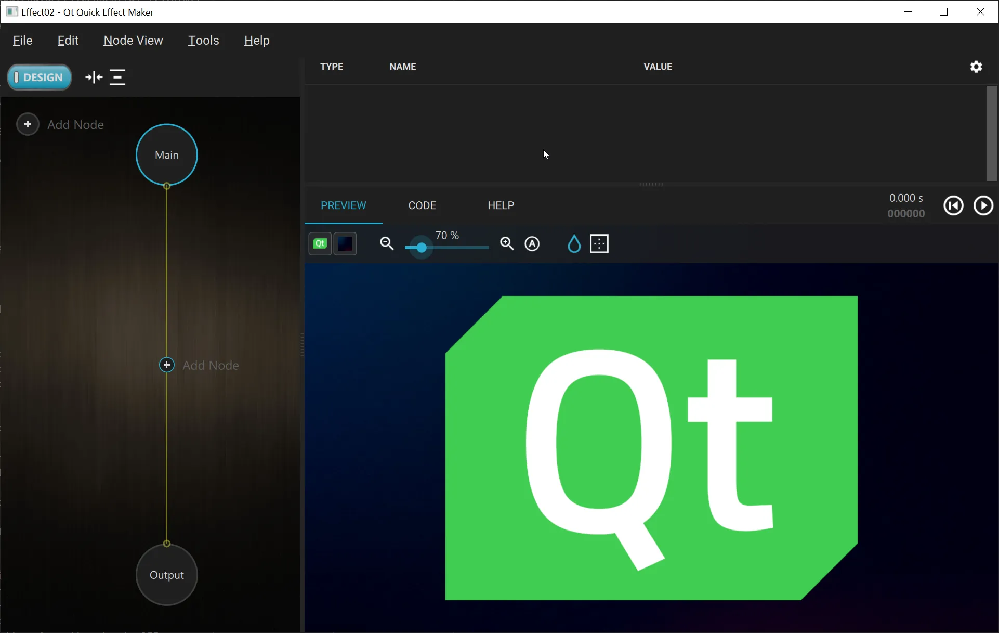
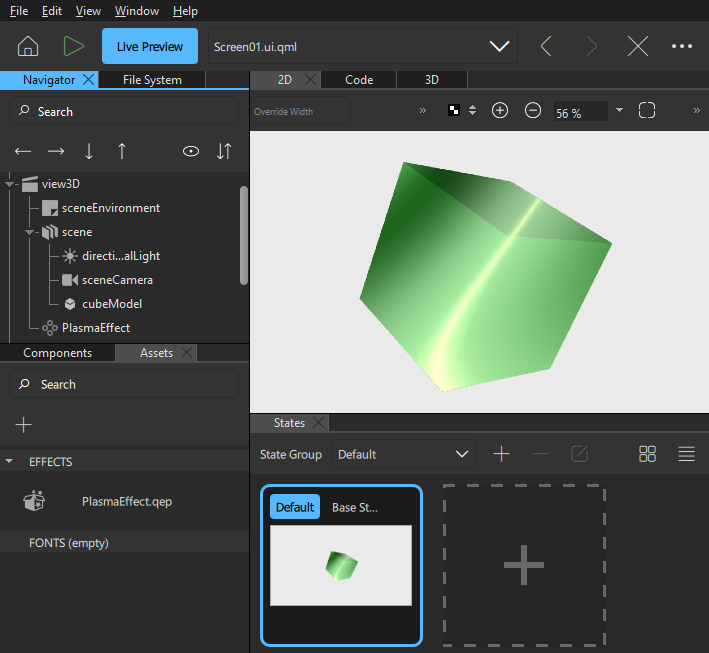

Using Qt Quick Effect Maker Effects
Qt Quick Effect Maker is integrated into Qt Design Studio for creating shader effects. To create an effect, you first create the effect file in Qt Design Studio, and then you edit it in Qt Quick Effect Maker.
For more information about Qt Quick Effect Maker, see the Qt Quick Effect Maker Manual.
Creating an Effect File
To create an effect file in Qt Design Studio:
- Right-click in the Assets view and select New Effect. Qt Design Studio creates an effect file and opens it in Qt Quick Effect Maker.

- Edit the effect.
- In Qt Quick Effect Maker, go to File > Save.
- With the default settings, select OK.

Now, you can close Qt Quick Effect Maker and return to Qt Design Studio and apply the effect.
Applying an Effect
You can apply effects to components in Qt Design Studio. To do so, drag the effect from the Assets view to the component in the 2D or Navigator view.
